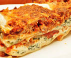

Lasagna Recipe

Description
Everyone loves a good lasagna, right? It's a great way to feed a crowd and
a perfect dish to bring to a potluck. It freezes well. It reheats well.
Leftovers will keep you happy for days. Below is the recipe for
Alton Hoover's Lasagna
Ingredients
- 2 teaspoons extra virgin olive oil
- 1 pound ground beef chuck
- 1/2 medium onion, diced (about 3/4 cup)
- 1/2 large bell pepper (green, red, or yellow), diced (about 3/4 cup)
- 2 cloves garlic, minced
- 1 (28-ounce)can good-quality tomato sauce
- 3 ounces tomato paste (half a 6-ounce can)
- 1 (14 ounce) can crushed tomatoes
- 2 tablespoons chopped fresh oregano, or 2 teaspoons dried oregano
- 1/4 cup chopped fresh parsley (preferably flat leaf), packed
- 1 tablespoon Italian seasoning
- 1 pinch garlic powder and/or garlic salt
- 1 tablespoon red or white wine vinegar
- 1 tablespoon to 1/4 cup sugar (to taste, optional)
- Salt
Steps
- Start by making the sauce
- Let this simmer while you boil the noodles and get the cheeses ready.
- From there, it's just an assembly job.
- Bake until bubbly and you're ready to eat!